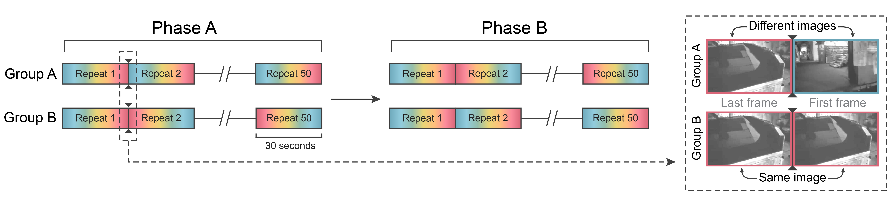
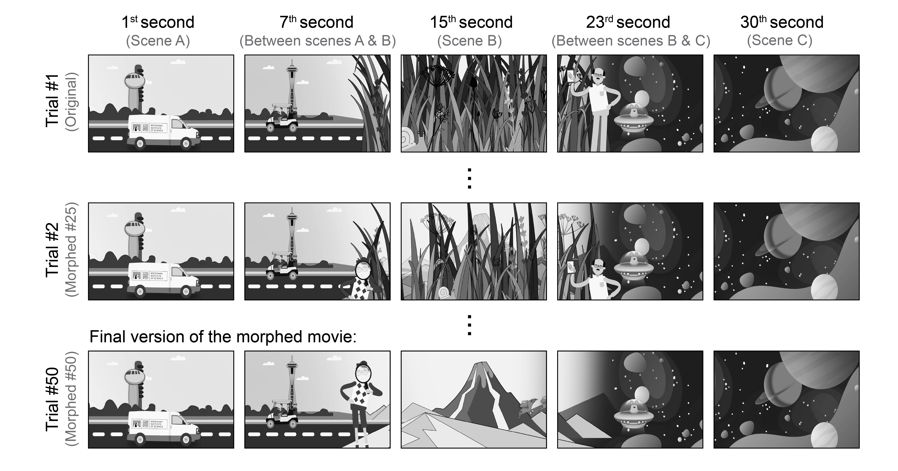
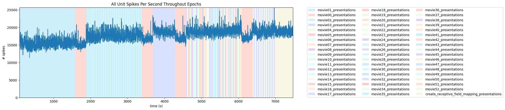
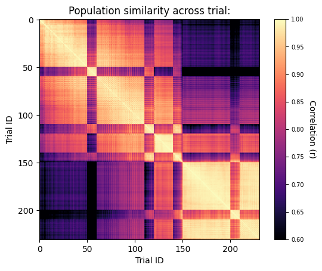
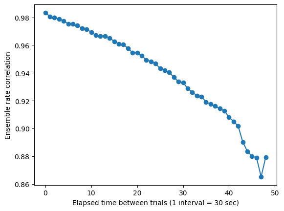
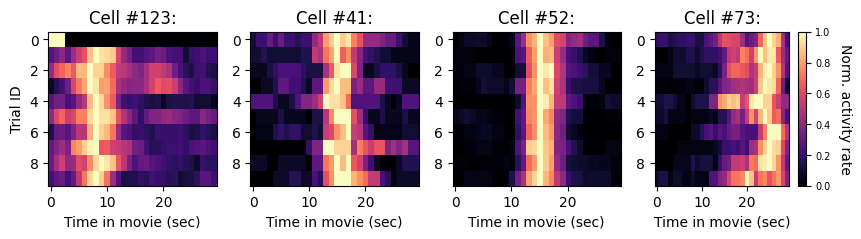
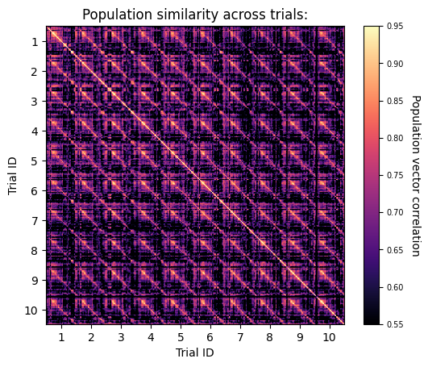
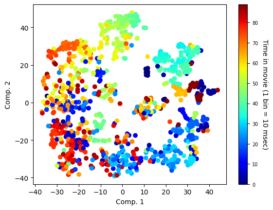

OpenScope’s LOOP Dataset#
Introduction#
In the natural world, sensory experience unfolds as a continuous and dynamic process where past sensory input predicts the present. The brain utilizes this sequential flow of recent sensory information to make predictions, infer causal relationships between events, and to give rise to our perceptions. Traditionally, such higher cognitive functions were attributed to the computations undertaken in associative brain regions, while sensory areas (such as V1) were thought to serve as passive feature detectors1,2. This longstanding view is now being challenged by compelling evidence showing the capacity of these areas for plasticity3–6 and complex computations such as forming spatial expectations7,8, temporal associations9, reward prediction10,11, and categorial learning12. Importantly, it has been established that sensory processing is not solely determined by the system’s current sensory inputs but also strongly influenced by preceding sensory inputs, a phenomenon known as hysteresis13–17.This phenomenon has been characterized in detail in the visual system, with prominent examples that include adaptation18, repetition suppression19, prediction suppression20 and facilitatory history effects21. However, previous work predominantly focused on the neuronal dynamics over short time scales, ranging from milliseconds22 to several minutes23,24, in response to a limited set of synthetic stimuli. Moreover, much of our current knowledge relies on recordings from the primary visual cortex and on interpretations that emphasize modulation of single cells’ activity rather than analysis of population-level dynamics25–30. Consequently, the extent to which prior experience over longer timescales shapes neuronal representations, and specifically representations of more ethologically relevant natural stimuli, remains unclear31–33. It also remains unclear whether and to what extent the effects of prior experience on such neuronal representations differ along the visual system’s hierarchical structure.
Main question and hypothesis#
We focus on how past experience impacts the neuronal representations of distinct visual scenes. We hypothesize that distinct visual scenes can be associated through their learned sequential order and temporal proximity, and that the persistence of this association over time can constrain visual system flexibility.
• Aim 1: Determine whether the visual system can form associations between visually distinct natural sceneries based on their temporal proximity; if so, determine if such associations persist when their temporal relationship is perturbed.
• Aim 2: Determine how prior experience of complex sceneries constrains the degree to which their neuronal representations change in the future.
Experiment design#
Visual stimuli:
Two distinct single-shot natural movies were used. One of the movies was used in the previously published datasets34 (‘Natural movie 1’), and the other was a newly generated movie with multiple (n=50) versions which differed for one another in a several-second-long scene that gradually changed with every trial (i.e., movie presentation).
Each mouse underwent through a single, 120 minutes long, recording session with six Neuropixels probes35 implanted along the visual processing hierarchy as previously done34.
Each session consists of two phases in which different sets of 30 sec long natural movies were presented:
Aim 1 consists of two natural movies (i.e., movie01 and movie02) and a constant gray screen (i.e., movie00).
Aim 2 consists of 50 natural movies (i.e., movie03-movie52) and a constant gray screen (i.e., movie00).
Animals (N=14) were assigned into two groups (A and B; N=7 each), with each group presented with the movies in different order.
In both groups, a total of 230 movies will be presented for a total time of 115 min:
For group A:
Aim 1:
50 presentations of movie01 (25 min)
10 presentations of movie00 (5 min)
50 alternations between movie01 and movie02 (25 min)
10 presentations of movie00 (5 min)
Aim 2:
20 presentations of movie03 (10 min)
10 presentations of movie00 (5 min)
50 sequential presentations of movie03 to movie52 (25 min)
10 presentations of movie00 (5 min)
20 alternations between movie03 and movie52 (10 min)
For group B:
Aim 1:
50 alternations between movie01 and movie02 (25 min)
10 presentations of movie00 (5 min)
50 presentations of movie01 (25 min)
10 presentations of movie00 (5 min)
Aim 2:
20 presentations of movie03 (10 min)
10 presentations of movie00 (5 min)
50 presentations of movie52 (25 min)
10 presentations of movie00 (5 min)
20 alternations between movie03 and movie52 (10 min)

Examples of movies presented#
Aim 1 - natural movie in a forawrd-reversed fashion:#

Aim 2 - gradually morphing movie:#

References#
Hubel, D. H. & Wiesel, T. N. Receptive fields of single neurones in the cat’s striate cortex. J Physiol 148, 574–591 (1959).
Felleman, D. J. & Van Essen, D. C. Distributed Hierarchical Processing in the Primate Cerebral Cortex. https://academic.oup.com/cercor/article/1/1/1/408896.
Hofer, S. B., Mrsic-Flogel, T. D., Bonhoeffer, T. & Hübener, M. Experience leaves a lasting structural trace in cortical circuits. Nature 457, 313–317 (2009).
Rose, T., Jaepel, J., Hübener, M. & Bonhoeffer, T. Cell-specific restoration of stimulus preference after monocular deprivation in the visual cortex. Science (1979) 352, 1319–1322 (2016).
Kreile, A. K., Bonhoeffer, T. & Hübener, M. Altered Visual Experience Induces Instructive Changes of Orientation Preference in Mouse Visual Cortex. The Journal of Neuroscience 31, 13911–13920 (2011).
Bauer, J. et al. Sensory experience steers representational drift in mouse visual cortex. doi:10.1101/2023.09.22.558966.
Fiser, A. et al. Experience-dependent spatial expectations in mouse visual cortex. Nat Neurosci 19, 1658–1664 (2016).
Saleem, A. B., Diamanti, E. M., Fournier, J., Harris, K. D. & Carandini, M. Coherent encoding of subjective spatial position in visual cortex and hippocampus. Nature 562, 124–127 (2018).
Knöpfel, T. et al. Audio-visual experience strengthens multisensory assemblies in adult mouse visual cortex. Nat Commun 10, 5684 (2019).
Shuler, M. G. & Bear, M. F. Reward Timing in the Primary Visual Cortex. Science (1979) 311, 1606–1609 (2006).
Henschke, J. U. et al. Reward Association Enhances Stimulus-Specific Representations in Primary Visual Cortex. Current Biology 30, 1866-1880.e5 (2020).
Goltstein, P. M., Reinert, S., Bonhoeffer, T. & Hübener, M. Mouse visual cortex areas represent perceptual and semantic features of learned visual categories. Nat Neurosci 24, 1441–1451 (2021).
Poltoratski, S. & Tong, F. Hysteresis in the dynamic perception of scenes and objects. J Exp Psychol Gen 143, 1875–1892 (2014).
Sayal, A. et al. Identification of competing neural mechanisms underlying positive and negative perceptual hysteresis in the human visual system. Neuroimage 221, 117153 (2020).
Buckthought, A., Kim, J. & Wilson, H. R. Hysteresis effects in stereopsis and binocular rivalry. Vision Res 48, 819–830 (2008).
Liaci, E. et al. Positive and negative hysteresis effects for the perception of geometric and emotional ambiguities. PLoS One 13, e0202398 (2018).
Leutgeb, J. K. et al. Progressive Transformation of Hippocampal Neuronal Representations in “Morphed” Environments. Neuron 48, 345–358 (2005).
Jin, M. & Glickfeld, L. L. Magnitude, time course, and specificity of rapid adaptation across mouse visual areas. J Neurophysiol 124, 245–258 (2020).
McMahon, D. B. T. & Olson, C. R. Repetition Suppression in Monkey Inferotemporal Cortex: Relation to Behavioral Priming. J Neurophysiol 97, 3532–3543 (2007).
Meyer, T. & Olson, C. R. Statistical learning of visual transitions in monkey inferotemporal cortex. Proceedings of the National Academy of Sciences 108, 19401–19406 (2011).
Kim, H., Homann, J., Tank, D. W. & Ii, M. J. B. A Long Timescale Stimulus History Effect in the Primary Visual Cortex. doi:10.1101/585539.
Nortmann, N., Rekauzke, S., Onat, S., König, P. & Jancke, D. Primary Visual Cortex Represents the Difference Between Past and Present. Cerebral Cortex 25, 1427–1440 (2015).
Fritsche, M., Solomon, S. G. & de Lange, F. P. Brief Stimuli Cast a Persistent Long-Term Trace in Visual Cortex. The Journal of Neuroscience 42, 1999–2010 (2022).
Peter, A. et al. Stimulus-specific plasticity of macaque V1 spike rates and gamma. Cell Rep 37, 110086 (2021).
Gallego, J. A., Perich, M. G., Chowdhury, R. H., Solla, S. A. & Miller, L. E. Long-term stability of cortical population dynamics underlying consistent behavior. Nat Neurosci 23, 260–270 (2020).
Pashkovski, S. L. et al. Structure and flexibility in cortical representations of odour space. Nature 583, 253–258 (2020).
Montijn, J. S., Meijer, G. T., Lansink, C. S. & Pennartz, C. M. A. Population-Level Neural Codes Are Robust to Single-Neuron Variability from a Multidimensional Coding Perspective. Cell Rep 16, 2486–2498 (2016).
Schneider, S., Lee, J. H. & Mathis, M. W. Learnable latent embeddings for joint behavioural and neural analysis. Nature 617, 360–368 (2023).
Xia, J., Marks, T. D., Goard, M. J. & Wessel, R. Stable representation of a naturalistic movie emerges from episodic activity with gain variability. Nat Commun 12, 5170 (2021).
Rubin, A. et al. Revealing neural correlates of behavior without behavioral measurements. Nat Commun 10, 4745 (2019).
Talebi, V. & Baker, C. L. Natural versus Synthetic Stimuli for Estimating Receptive Field Models: A Comparison of Predictive Robustness. The Journal of Neuroscience 32, 1560–1576 (2012).
Felsen, G., Touryan, J., Han, F. & Dan, Y. Cortical Sensitivity to Visual Features in Natural Scenes. PLoS Biol 3, e342 (2005).
Lazar, A. et al. Paying attention to natural scenes in area V1. doi:10.1101/2023.03.21.533636.
Siegle, J. H. et al. Survey of spiking in the mouse visual system reveals functional hierarchy. Nature 592, 86–92 (2021).
Jun, J. J. et al. Fully integrated silicon probes for high-density recording of neural activity. Nature 551, 232–236 (2017).
Section A - explore basic features of the dataset:#
In this section we will learn how to download and extract basic information from NWB files.
Environment setup#
⚠️Note: If running on a new environment, run this cell once and then restart the kernel⚠️
try:
from databook_utils.dandi_utils import dandi_download_open
except:
!git clone https://github.com/AllenInstitute/openscope_databook.git
%cd openscope_databook
%pip install -e .
%cd docs/projects
import os
import matplotlib as mpl
import matplotlib.pyplot as plt
import numpy as np
import pandas as pd
from math import floor, ceil
from sklearn.manifold import TSNE
from sklearn.decomposition import PCA
from sklearn.preprocessing import StandardScaler
Extract basic information about the dataset#
session_files = pd.read_csv("../../data/loop_sessions.csv")
session_files
| identifier | size | path | session_time | sub_name | sub_sex | sub_age | sub_genotype | sub_group | probes | stim types | #_units | session_length | |
|---|---|---|---|---|---|---|---|---|---|---|---|---|---|
| 0 | 6b94958d-c883-4183-8ba1-c6a4a734f669 | 12099295788 | sub-747815\sub-747815_ecephys.nwb | 2024-08-28T15:53:33.997646-07:00 | 747815 | M | 113 | wt/wt | A | {'probeA','probeB','probeC','probeD','probeE',... | {'movie00_presentations','movie01_presentation... | 3959 | 7511.932 |
| 1 | cdff7fc7-ad58-4b73-9301-899999396035 | 11679969079 | sub-747816\sub-747816_ecephys.nwb | 2024-08-14T13:57:37-07:00 | 747816 | F | 99 | wt/wt | A | {'probeA','probeB','probeC','probeD','probeE',... | {'movie00_presentations','movie01_presentation... | 3923 | 7451.397 |
| 2 | 7cbbef6f-f8e9-481d-8605-320dd97b4621 | 12061439170 | sub-747824\sub-747824_ecephys.nwb | 2024-08-29T13:52:36-07:00 | 747824 | M | 107 | wt/wt | A | {'probeA','probeB','probeC','probeD','probeE',... | {'movie00_presentations','movie01_presentation... | 4006 | 7467.487 |
| 3 | 10f592db-3565-4abf-9901-027f09e32210 | 10895734616 | sub-747825\sub-747825_ecephys.nwb | 2024-08-28T14:09:58-07:00 | 747825 | M | 106 | wt/wt | A | {'probeA','probeB','probeC','probeD','probeE',... | {'movie00_presentations','movie01_presentation... | 3307 | 7471.242 |
| 4 | 0bd7aca0-c7b5-4e5c-b890-f2fe417cca57 | 11782270726 | sub-747829\sub-747829_ecephys.nwb | 2024-09-04T14:06:07-07:00 | 747829 | F | 113 | wt/wt | A | {'probeA','probeB','probeC','probeD','probeE',... | {'movie00_presentations','movie01_presentation... | 3787 | 7477.819 |
| 5 | 09fa58cf-e3ac-4f57-b609-0edae3a03184 | 10979064090 | sub-751594\sub-751594_ecephys.nwb | 2024-09-12T14:23:48-07:00 | 751594 | M | 107 | wt/wt | B | {'probeA','probeB','probeC','probeD','probeE',... | {'movie00_presentations','movie01_presentation... | 3163 | 7440.850 |
| 6 | e7f4e045-da1d-40c8-90e2-b17d60e41a18 | 10008833827 | sub-751596\sub-751596_ecephys.nwb | 2024-09-18T14:05:53-07:00 | 751596 | F | 113 | wt/wt | B | {'probeB','probeC','probeD','probeE','probeF'} | {'movie00_presentations','movie01_presentation... | 3224 | 7436.762 |
| 7 | fefcb822-06a5-4939-86f6-1bd20a51f109 | 11743653763 | sub-753020\sub-753020_ecephys.nwb | 2024-09-25T13:47:49-07:00 | 753020 | F | 113 | wt/wt | B | {'probeA','probeB','probeC','probeD','probeE',... | {'movie00_presentations','movie01_presentation... | 3736 | 7436.375 |
| 8 | 6a7deb4b-195e-4756-9e1a-022f007acd1a | 10346001307 | sub-754603\sub-754603_ecephys.nwb | 2024-10-02T13:55:49-07:00 | 754603 | M | 113 | wt/wt | B | {'probeA','probeB','probeC','probeD','probeE',... | {'movie00_presentations','movie01_presentation... | 3023 | 7434.681 |
| 9 | df9a4c6f-17f0-4925-8c4c-6812724b3878 | 11776646878 | sub-754604\sub-754604_ecephys.nwb | 2024-10-03T13:17:45-07:00 | 754604 | F | 114 | wt/wt | B | {'probeA','probeB','probeC','probeD','probeE',... | {'movie00_presentations','movie01_presentation... | 3935 | 7437.016 |
| 10 | 449c2bb1-e07b-483a-9b2b-494656b34a51 | 11192269600 | sub-754605\sub-754605_ecephys.nwb | 2024-10-08T14:17:27-07:00 | 754605 | F | 119 | wt/wt | B | {'probeA','probeB','probeC','probeD','probeE',... | {'movie00_presentations','movie01_presentation... | 3591 | 7434.583 |
| 11 | c05f39e2-0e1d-4d6c-be8c-2eb7d6e5c6d7 | 11231488756 | sub-755828\sub-755828_ecephys.nwb | 2024-10-17T13:36:40-07:00 | 755828 | M | 121 | wt/wt | A | {'probeA','probeB','probeC','probeD','probeE',... | {'movie00_presentations','movie01_presentation... | 3704 | 7467.368 |
| 12 | 51cc7d1b-46f3-4304-9106-9c06ae031342 | 11785861378 | sub-755830\sub-755830_ecephys.nwb | 2024-10-10T14:05:36-07:00 | 755830 | F | 114 | wt/wt | B | {'probeA','probeB','probeC','probeD','probeE',... | {'movie00_presentations','movie01_presentation... | 3805 | 7435.845 |
| 13 | 56971ceb-f73c-45fd-bb10-8770039fcf91 | 10518178467 | sub-757088\sub-757088_ecephys.nwb | 2024-10-16T14:40:58-07:00 | 757088 | F | 113 | wt/wt | A | {'probeA','probeB','probeC','probeD','probeE',... | {'movie00_presentations','movie01_presentation... | 3057 | 7474.789 |
m_count = len(session_files["sub_sex"][session_files["sub_sex"] == "M"])
f_count = len(session_files["sub_sex"][session_files["sub_sex"] == "F"])
wt_count = len(session_files[session_files["sub_genotype"].str.count("wt/wt") >= 1])
print("Dandiset Overview:")
print(len(session_files), "files")
print(len(set(session_files["sub_name"])), "subjects", m_count, "males,", f_count, "females")
Dandiset Overview:
14 files
14 subjects 6 males, 8 females
Downloading a single Ecephys NWB file#
dandiset_id = "001191"
dandi_filepath = "sub-747825/sub-747825_ecephys.nwb"
download_loc = "."
dandi_api_key = os.environ["DANDI_API_KEY"]
# This can sometimes take a while depending on the size of the file
io = dandi_download_open(dandiset_id, dandi_filepath, download_loc, dandi_api_key=dandi_api_key)
nwb = io.read()
File already exists
Opening file
c:\Users\carter.peene\Desktop\Repos\openscope_databook\.venv\lib\site-packages\hdmf\common\table.py:525: UserWarning: An attribute 'name' already exists on DynamicTable 'eye_tracking' so this column cannot be accessed as an attribute, e.g., table.name; it can only be accessed using other methods, e.g., table['name'].
self.__set_table_attr(col)
Extracting units spikes and locations#
Below, the Units table is retrieved from the file. It contains many metrics for every putative neuronal unit, printed below. For the analysis in this notebook, we are mainly interested in the spike_times attribute. This is an array of timestamps that a spike is measured for each unit. For more information on the various unit metrics, see Visualizing Unit Quality Metrics. From this table, the Units used in this notebook are selected if they belong in one of the regions of the primary visual cortex.
units = nwb.units
units[:10]
| spike_times | electrodes | waveform_mean | waveform_sd | unit_name | drift_std | rp_contamination | nn_miss_rate | amplitude_cv_median | estimated_x | ... | presence_ratio | rp_violations | num_positive_peaks | amplitude | peak_trough_ratio | isi_violations_ratio | decoder_probability | repolarization_slope | ks_unit_id | num_spikes | |
|---|---|---|---|---|---|---|---|---|---|---|---|---|---|---|---|---|---|---|---|---|---|
| id | |||||||||||||||||||||
| 0 | [20.182346858988613, 20.51824484820569, 20.692... | [0, 1, 2, 3, 4, 5, 6, 7, 8, 9, 10, 11, 12, 13,... | [[0.7019997239112854, 0.19187992811203003, 0.2... | [[19.06691551208496, 19.063072204589844, 21.69... | 149b01a4-d6af-4329-9ae7-21ed873ffa21 | 4.565579 | 0.070028 | 0.021143 | 0.260527 | 19.12 | ... | 1.000 | 19 | 1 | 99.69 | -0.519146 | 0.087730 | 0.789056 | 6.448576e+05 | 0 | 32491 |
| 1 | [28.338931364638007, 28.378264462511993, 28.51... | [0, 1, 2, 3, 4, 5, 6, 7, 8, 9, 10, 11, 12, 13,... | [[0.6224396824836731, -0.3697202503681183, 0.7... | [[20.10701560974121, 19.00174903869629, 23.121... | 85961830-770e-4e99-8ba7-dfb341f4ea92 | NaN | 0.000000 | 0.008733 | 0.677306 | 47.57 | ... | 0.984 | 0 | 1 | 102.90 | -0.094652 | 1.803650 | 0.541565 | 8.523726e+04 | 1 | 1666 |
| 2 | [20.03051443456827, 20.058980930826223, 20.073... | [0, 1, 2, 3, 4, 5, 6, 7, 8, 9, 10, 11, 12, 13,... | [[-0.9313201904296875, -0.66923987865448, -0.7... | [[18.49985694885254, 18.80291748046875, 20.931... | cd143374-ae2a-4b81-9e7d-f5d0f6d7512a | 4.435255 | 0.017545 | 0.014857 | 0.153883 | 7.26 | ... | 1.000 | 354 | 1 | 191.30 | -0.317906 | 0.019880 | 0.806371 | 1.110838e+06 | 2 | 276451 |
| 3 | [20.058680932622103, 20.082614122684408, 20.12... | [0, 1, 2, 3, 4, 5, 6, 7, 8, 9, 10, 11, 12, 13,... | [[-1.1793601512908936, -0.2620803117752075, -1... | [[18.960338592529297, 19.205020904541016, 23.1... | 4b4b6804-fd35-4689-b874-4162ea3360aa | NaN | 0.132919 | 0.021953 | NaN | 8.08 | ... | 1.000 | 14 | 1 | 148.28 | -0.398973 | 0.124084 | 0.759398 | 1.006369e+06 | 3 | 20582 |
| 4 | [20.197213436659627, 20.370779064312035, 20.50... | [0, 1, 2, 3, 4, 5, 6, 7, 8, 9, 10, 11, 12, 13,... | [[-0.4539600908756256, -0.3790798485279083, -0... | [[18.63796615600586, 18.85635757446289, 21.796... | 75f96cd7-0212-4280-9691-e2b29dcc0294 | 1.616157 | 0.000000 | 0.022232 | NaN | 6.88 | ... | 1.000 | 0 | 1 | 117.87 | -0.586625 | 0.048500 | 0.811322 | 6.509424e+05 | 4 | 14368 |
| 5 | [23.11416264162112, 24.30045554012727, 24.5192... | [0, 1, 2, 3, 4, 5, 6, 7, 8, 9, 10, 11, 12, 13,... | [[-1.155959963798523, -0.9687597751617432, -0.... | [[19.39491844177246, 20.012475967407227, 22.36... | e414ad49-9ce6-45ab-b057-59c669a5b121 | NaN | 0.000000 | 0.020044 | NaN | 28.15 | ... | 0.488 | 0 | 1 | 85.80 | -0.249686 | 0.000000 | 0.515112 | 5.766773e+05 | 5 | 896 |
| 6 | [19.99448131693965, 20.039414381290605, 20.061... | [0, 1, 2, 3, 4, 5, 6, 7, 8, 9, 10, 11, 12, 13,... | [[-0.3509998917579651, 0.2761194109916687, -0.... | [[17.19342803955078, 18.795902252197266, 19.09... | 07bdb489-0c15-4fde-baaf-c6b0f342d682 | 6.007311 | 0.031555 | 0.016656 | 0.253346 | 35.90 | ... | 1.000 | 249 | 1 | 130.89 | -0.566064 | 0.038832 | 0.864272 | 7.616187e+05 | 6 | 173501 |
| 7 | [19.998514626128422, 20.031581094849603, 20.04... | [0, 1, 2, 3, 4, 5, 6, 7, 8, 9, 10, 11, 12, 13,... | [[-0.416519433259964, -0.2807996869087219, -0.... | [[18.044757843017578, 19.73351287841797, 20.71... | dd89aa39-e9e3-41b0-93e6-6a212444c9b6 | 5.612966 | 0.010298 | 0.033378 | 0.288877 | 44.81 | ... | 1.000 | 230 | 1 | 96.99 | -0.355319 | 0.010750 | 0.809977 | 5.734405e+05 | 7 | 290326 |
| 8 | [19.98698136183656, 19.990248008948125, 19.995... | [0, 1, 2, 3, 4, 5, 6, 7, 8, 9, 10, 11, 12, 13,... | [[0.38843995332717896, 0.09359971433877945, -0... | [[19.39836883544922, 18.546384811401367, 22.73... | 468822e7-2267-440b-911a-63f7f4338aa7 | 6.331952 | 0.040865 | 0.006307 | 0.153518 | 9.15 | ... | 1.000 | 896 | 1 | 279.61 | -0.485398 | 0.044467 | 0.832779 | 1.570705e+06 | 8 | 289899 |
| 9 | [20.51831151447327, 20.638710793728215, 20.715... | [0, 1, 2, 3, 4, 5, 6, 7, 8, 9, 10, 11, 12, 13,... | [[-0.16379998624324799, -0.8470801711082458, -... | [[19.477611541748047, 18.863203048706055, 23.4... | 7660c3d3-8e69-4d79-813a-968ce1ae8a10 | NaN | 0.625866 | 0.001007 | 0.525502 | 44.19 | ... | 1.000 | 6 | 1 | 109.76 | -0.152912 | 0.286673 | 0.513893 | 1.909555e+05 | 9 | 7238 |
10 rows × 54 columns
nwb.electrodes[:10]
| location | group | group_name | channel_name | inter_sample_shift | rel_x | rel_y | x | y | z | |
|---|---|---|---|---|---|---|---|---|---|---|
| id | ||||||||||
| 0 | MRN | probeA pynwb.ecephys.ElectrodeGroup at 0x20954... | probeA | AP1 | 0.000000 | 16.0 | 0.0 | 8.561 | 3.994 | 6.982 |
| 1 | MRN | probeA pynwb.ecephys.ElectrodeGroup at 0x20954... | probeA | AP2 | 0.000000 | 48.0 | 0.0 | 8.558 | 3.984 | 6.985 |
| 2 | MRN | probeA pynwb.ecephys.ElectrodeGroup at 0x20954... | probeA | AP3 | 0.076923 | 0.0 | 20.0 | 8.556 | 3.975 | 6.988 |
| 3 | MRN | probeA pynwb.ecephys.ElectrodeGroup at 0x20954... | probeA | AP4 | 0.076923 | 32.0 | 20.0 | 8.554 | 3.965 | 6.991 |
| 4 | MRN | probeA pynwb.ecephys.ElectrodeGroup at 0x20954... | probeA | AP5 | 0.153846 | 16.0 | 40.0 | 8.551 | 3.955 | 6.994 |
| 5 | MRN | probeA pynwb.ecephys.ElectrodeGroup at 0x20954... | probeA | AP6 | 0.153846 | 48.0 | 40.0 | 8.549 | 3.946 | 6.997 |
| 6 | MRN | probeA pynwb.ecephys.ElectrodeGroup at 0x20954... | probeA | AP7 | 0.230769 | 0.0 | 60.0 | 8.546 | 3.936 | 7.000 |
| 7 | APN | probeA pynwb.ecephys.ElectrodeGroup at 0x20954... | probeA | AP8 | 0.230769 | 32.0 | 60.0 | 8.544 | 3.927 | 7.003 |
| 8 | APN | probeA pynwb.ecephys.ElectrodeGroup at 0x20954... | probeA | AP9 | 0.307692 | 16.0 | 80.0 | 8.542 | 3.917 | 7.006 |
| 9 | APN | probeA pynwb.ecephys.ElectrodeGroup at 0x20954... | probeA | AP10 | 0.307692 | 48.0 | 80.0 | 8.539 | 3.907 | 7.009 |
# select electrodes
channel_locations = {}
channel_probes = {}
channel_idxs = {}
electrodes = nwb.electrodes
for i in range(len(electrodes)):
channel_id = electrodes["id"][i]
location = electrodes["location"][i]
probe = electrodes["group_name"][i]
channel_locations[channel_id] = location
channel_probes[channel_id] = probe
# align location information from electrodes table with channel id from the units table
# takes a few minutes to run (~5 min)
mean_waveforms = units.waveform_mean
electrodes_index = units.electrodes_index
unit_locations = {}
for i in range(len(mean_waveforms)):
flat_index = np.argmin(mean_waveforms[i])
coordinates = np.unravel_index(flat_index, mean_waveforms[i].shape)
row_index, col_index = coordinates
unit_loc = electrodes_index[i].iloc[col_index]["location"]
unit_locations.setdefault(unit_loc, []).append(i)
# print all recorded brain areas
print(set(unit_locations.keys()))
{'DG-po', 'VISl5', 'VISal4', 'MB', 'CA1', 'VISpm5', 'MGm', 'VISrl6b', 'SUB', 'VISal6a', 'NB', 'VISp1', 'VISl1', 'VISp6b', 'VISrl2/3', 'VISrl5', 'ProS', 'VISam1', 'NOT', 'VISl6a', 'VISam5', 'VISal2/3', 'VISal5', 'root', 'VISp6a', 'DG-sg', 'PIL', 'VISam4', 'APN', 'VISp4', 'VISal6b', 'MGd', 'VISpm6a', 'MGv', 'VISpm2/3', 'VISp5', 'TH', 'VISp2/3', 'VISrl6a', 'VISam2/3', 'VISrl4', 'VISpm4', 'PRE', 'HPF', 'CA3', 'VISl2/3', 'VISrl1', 'VISl6b', 'VISam6a', 'MRN', 'DG-mo', 'VISl4', 'VISpm6b', 'VISal1'}
# selecting units spike times
units_spike_times = []
for row in units:
units_spike_times.append(row.spike_times.item())
units_spike_times = np.array(units_spike_times, dtype=object) # all units
V1_units_ind = []
for i in ['VISp1','VISp2/3','VISp4','VISp5','VISp6b']:
V1_units_ind.extend(unit_locations.get(i))
V1_spike_times = units_spike_times[V1_units_ind] # all V1 units
Section B - basic analysis of neuronal data:#
As part of the project, we plan to compare the similarity in neuronal responses across stimuli occurring at different times of the experiment within each group of mice. As such, our analysis relies on the stable recording of the same single unit’s activity across different blocks of each aim. In the next sections we will examine a subset of both gross and fine measures of neuronal activity and quantify their stability over time.
Plot overall activity according to session timeline#
In the following section we will extract the start and end times of each trial (i.e., movie presentations) in the experiment and plot the overall activity (in total number of spikes) across all neurons in each trial. Changes in overall activity levels over time could be a result of recording instability or behavioral changes.
# extract epoch times from stim table where stimulus rows have a different 'block' than following row
# returns list of epochs, where an epoch is of the form (stimulus name, stimulus block, start time, stop time)
def extract_epochs(stim_name, stim_table, epochs):
# specify a current epoch stop and start time
epoch_start = stim_table.start_time[0]
epoch_stop = stim_table.stop_time[0]
# for each row, try to extend current epoch stop_time
for i in range(len(stim_table)):
this_block = stim_table.stim_block[i]
# if end of table, end the current epoch
if i+1 >= len(stim_table):
epochs.append((stim_name, this_block, epoch_start, epoch_stop))
break
next_block = stim_table.stim_block[i+1]
# if next row is the same stim block, push back epoch_stop time
if next_block == this_block:
epoch_stop = stim_table.stop_time[i+1]
# otherwise, end the current epoch, start new epoch
else:
epochs.append((stim_name, this_block, epoch_start, epoch_stop))
epoch_start = stim_table.start_time[i+1]
epoch_stop = stim_table.stop_time[i+1]
return epochs
# extract epochs from all valid stimulus tables
epochs = []
for stim_name in nwb.intervals.keys():
stim_table = nwb.intervals[stim_name]
try:
epochs = extract_epochs(stim_name, stim_table, epochs)
except:
continue
# epochs take the form (stimulus name, stimulus block, start time, stop time)
print(len(epochs))
epochs.sort(key=lambda x: x[2])
for epoch in epochs:
print(epoch)
231
('movie01_presentations', '0.0', 79.16006702930127, 109.10165702930126)
('movie01_presentations', '1.0', 109.10165702930126, 139.12661702930126)
('movie01_presentations', '2.0', 139.12661702930126, 169.15165702930128)
('movie01_presentations', '3.0', 169.15165702930128, 199.17669702930127)
('movie01_presentations', '4.0', 199.17669702930127, 229.20171702930128)
('movie01_presentations', '5.0', 229.20171702930128, 259.2267270293013)
('movie01_presentations', '6.0', 259.2267270293013, 289.2517770293013)
('movie01_presentations', '7.0', 289.2517770293013, 319.2768170293013)
('movie01_presentations', '8.0', 319.2768170293013, 349.3018470293013)
('movie01_presentations', '9.0', 349.3018470293013, 379.3268770293013)
('movie01_presentations', '10.0', 379.3268770293013, 409.3519170293013)
('movie01_presentations', '11.0', 409.3519170293013, 439.3769470293013)
('movie01_presentations', '12.0', 439.3769470293013, 469.4020170293013)
('movie01_presentations', '13.0', 469.4020170293013, 499.4270470293013)
('movie01_presentations', '14.0', 499.4270470293013, 529.4520670293012)
('movie01_presentations', '15.0', 529.4520670293012, 559.4771270293013)
('movie01_presentations', '16.0', 559.4771270293013, 589.5021470293013)
('movie01_presentations', '17.0', 589.5021470293013, 619.5271770293011)
('movie01_presentations', '18.0', 619.5271770293011, 649.5522170293013)
('movie01_presentations', '19.0', 649.5522170293013, 679.5772870293013)
('movie01_presentations', '20.0', 679.5772870293013, 709.6023070293013)
('movie01_presentations', '21.0', 709.6023070293013, 739.6273570293013)
('movie01_presentations', '22.0', 739.6273570293013, 769.6523670293013)
('movie01_presentations', '23.0', 769.6523670293013, 799.6774270293013)
('movie01_presentations', '24.0', 799.6774270293013, 829.7024670293013)
('movie01_presentations', '25.0', 829.7024670293013, 859.7275270293012)
('movie01_presentations', '26.0', 859.7275270293012, 889.7525470293012)
('movie01_presentations', '27.0', 889.7525470293012, 919.7776070293012)
('movie01_presentations', '28.0', 919.7776070293012, 949.8026270293012)
('movie01_presentations', '29.0', 949.8026270293012, 979.8276470293011)
('movie01_presentations', '30.0', 979.8276470293011, 1009.8526970293012)
('movie01_presentations', '31.0', 1009.8526970293012, 1039.8777570293012)
('movie01_presentations', '32.0', 1039.8777570293012, 1069.9028070293011)
('movie01_presentations', '33.0', 1069.9028070293011, 1099.9278370293011)
('movie01_presentations', '34.0', 1099.9278370293011, 1129.9528570293012)
('movie01_presentations', '35.0', 1129.9528570293012, 1159.9778970293012)
('movie01_presentations', '36.0', 1159.9778970293012, 1190.0029470293011)
('movie01_presentations', '37.0', 1190.0029470293011, 1220.027997029301)
('movie01_presentations', '38.0', 1220.027997029301, 1250.0530270293011)
('movie01_presentations', '39.0', 1250.0530270293011, 1280.0780870293013)
('movie01_presentations', '40.0', 1280.0780870293013, 1310.103107029301)
('movie01_presentations', '41.0', 1310.103107029301, 1340.1281770293012)
('movie01_presentations', '42.0', 1340.1281770293012, 1370.1532070293013)
('movie01_presentations', '43.0', 1370.1532070293013, 1400.1782470293012)
('movie01_presentations', '44.0', 1400.1782470293012, 1430.2032670293013)
('movie01_presentations', '45.0', 1430.2032670293013, 1460.2283070293013)
('movie01_presentations', '46.0', 1460.2283070293013, 1490.2533670293012)
('movie01_presentations', '47.0', 1490.2533670293012, 1520.2783970293012)
('movie01_presentations', '48.0', 1520.2783970293012, 1550.3034270293012)
('movie01_presentations', '49.0', 1550.3034270293012, 1580.3284670293012)
('movie00_presentations', '50.0', 1580.3284670293012, 1610.3535170293012)
('movie00_presentations', '51.0', 1610.3535170293012, 1640.3785570293012)
('movie00_presentations', '52.0', 1640.3785570293012, 1670.4035770293012)
('movie00_presentations', '53.0', 1670.4035770293012, 1700.4286170293012)
('movie00_presentations', '54.0', 1700.4286170293012, 1730.4536670293012)
('movie00_presentations', '55.0', 1730.4536670293012, 1760.4787270293011)
('movie00_presentations', '56.0', 1760.4787270293011, 1790.5037570293011)
('movie00_presentations', '57.0', 1790.5037570293011, 1820.528807029301)
('movie00_presentations', '58.0', 1820.528807029301, 1850.553837029301)
('movie00_presentations', '59.0', 1850.553837029301, 1880.578867029301)
('movie01_presentations', '60.0', 1880.578867029301, 1910.6038870293007)
('movie02_presentations', '61.0', 1910.6038870293007, 1940.628947029301)
('movie01_presentations', '62.0', 1940.628947029301, 1970.653987029301)
('movie02_presentations', '63.0', 1970.653987029301, 2000.679027029301)
('movie01_presentations', '64.0', 2000.679027029301, 2030.704067029301)
('movie02_presentations', '65.0', 2030.704067029301, 2060.7291070293013)
('movie01_presentations', '66.0', 2060.7291070293013, 2090.754157029301)
('movie02_presentations', '67.0', 2090.754157029301, 2120.779217029301)
('movie01_presentations', '68.0', 2120.779217029301, 2150.804237029301)
('movie02_presentations', '69.0', 2150.804237029301, 2180.8292370293016)
('movie01_presentations', '70.0', 2180.8292370293016, 2210.854317029301)
('movie02_presentations', '71.0', 2210.854317029301, 2240.879357029301)
('movie01_presentations', '72.0', 2240.879357029301, 2270.9043870293017)
('movie02_presentations', '73.0', 2270.9043870293017, 2300.929417029301)
('movie01_presentations', '74.0', 2300.929417029301, 2330.9544670293017)
('movie02_presentations', '75.0', 2330.9544670293017, 2360.9794870293017)
('movie01_presentations', '76.0', 2360.9794870293017, 2391.004537029301)
('movie02_presentations', '77.0', 2391.004537029301, 2421.0295670293017)
('movie01_presentations', '78.0', 2421.0295670293017, 2451.0546270293016)
('movie02_presentations', '79.0', 2451.0546270293016, 2481.0796570293014)
('movie01_presentations', '80.0', 2481.0796570293014, 2511.104717029302)
('movie02_presentations', '81.0', 2511.104717029302, 2541.129737029302)
('movie01_presentations', '82.0', 2541.129737029302, 2571.154777029302)
('movie02_presentations', '83.0', 2571.154777029302, 2601.179837029302)
('movie01_presentations', '84.0', 2601.179837029302, 2631.204857029302)
('movie02_presentations', '85.0', 2631.204857029302, 2661.2298870293016)
('movie01_presentations', '86.0', 2661.2298870293016, 2691.254947029301)
('movie02_presentations', '87.0', 2691.254947029301, 2721.279987029301)
('movie01_presentations', '88.0', 2721.279987029301, 2751.305017029302)
('movie02_presentations', '89.0', 2751.305017029302, 2781.330067029301)
('movie01_presentations', '90.0', 2781.330067029301, 2811.355107029301)
('movie02_presentations', '91.0', 2811.355107029301, 2841.3801370293017)
('movie01_presentations', '92.0', 2841.3801370293017, 2871.4051770293017)
('movie02_presentations', '93.0', 2871.4051770293017, 2901.430227029301)
('movie01_presentations', '94.0', 2901.430227029301, 2931.455247029301)
('movie02_presentations', '95.0', 2931.455247029301, 2961.480327029302)
('movie01_presentations', '96.0', 2961.480327029302, 2991.505347029301)
('movie02_presentations', '97.0', 2991.505347029301, 3021.5303970293016)
('movie01_presentations', '98.0', 3021.5303970293016, 3051.5554370293016)
('movie02_presentations', '99.0', 3051.5554370293016, 3081.5804670293014)
('movie01_presentations', '100.0', 3081.5804670293014, 3111.6054970293017)
('movie02_presentations', '101.0', 3111.6054970293017, 3141.630567029302)
('movie01_presentations', '102.0', 3141.630567029302, 3171.655587029302)
('movie02_presentations', '103.0', 3171.655587029302, 3201.6806370293016)
('movie01_presentations', '104.0', 3201.6806370293016, 3231.7056870293018)
('movie02_presentations', '105.0', 3231.7056870293018, 3261.730707029302)
('movie01_presentations', '106.0', 3261.730707029302, 3291.755757029301)
('movie02_presentations', '107.0', 3291.755757029301, 3321.7808070293017)
('movie01_presentations', '108.0', 3321.7808070293017, 3351.805837029301)
('movie02_presentations', '109.0', 3351.805837029301, 3381.830877029301)
('movie00_presentations', '110.0', 3381.830877029301, 3411.855917029301)
('movie00_presentations', '111.0', 3411.855917029301, 3441.880977029301)
('movie00_presentations', '112.0', 3441.880977029301, 3471.906017029301)
('movie00_presentations', '113.0', 3471.906017029301, 3501.931057029301)
('movie00_presentations', '114.0', 3501.931057029301, 3531.9561070293016)
('movie00_presentations', '115.0', 3531.9561070293016, 3561.981117029301)
('movie00_presentations', '116.0', 3561.981117029301, 3592.006177029302)
('movie00_presentations', '117.0', 3592.006177029302, 3622.0312270293016)
('movie00_presentations', '118.0', 3622.0312270293016, 3652.0562670293016)
('movie00_presentations', '119.0', 3652.0562670293016, 3682.0813070293016)
('movie03_presentations', '120.0', 3682.0813070293016, 3712.106337029302)
('movie03_presentations', '121.0', 3712.106337029302, 3742.1313870293015)
('movie03_presentations', '122.0', 3742.1313870293015, 3772.1564270293015)
('movie03_presentations', '123.0', 3772.1564270293015, 3802.1814770293017)
('movie03_presentations', '124.0', 3802.1814770293017, 3832.2065170293017)
('movie03_presentations', '125.0', 3832.2065170293017, 3862.2315670293015)
('movie03_presentations', '126.0', 3862.2315670293015, 3892.2565970293017)
('movie03_presentations', '127.0', 3892.2565970293017, 3922.2816570293016)
('movie03_presentations', '128.0', 3922.2816570293016, 3952.306687029301)
('movie03_presentations', '129.0', 3952.306687029301, 3982.331727029301)
('movie03_presentations', '130.0', 3982.331727029301, 4012.356767029302)
('movie03_presentations', '131.0', 4012.356767029302, 4042.381807029302)
('movie03_presentations', '132.0', 4042.381807029302, 4072.4068570293016)
('movie03_presentations', '133.0', 4072.4068570293016, 4102.431897029302)
('movie03_presentations', '134.0', 4102.431897029302, 4132.456937029301)
('movie03_presentations', '135.0', 4132.456937029301, 4162.481987029301)
('movie03_presentations', '136.0', 4162.481987029301, 4192.507017029301)
('movie03_presentations', '137.0', 4192.507017029301, 4222.532047029301)
('movie03_presentations', '138.0', 4222.532047029301, 4252.557097029301)
('movie03_presentations', '139.0', 4252.557097029301, 4282.582167029301)
('movie00_presentations', '140.0', 4282.582167029301, 4312.607177029301)
('movie00_presentations', '141.0', 4312.607177029301, 4342.632227029301)
('movie00_presentations', '142.0', 4342.632227029301, 4372.657257029301)
('movie00_presentations', '143.0', 4372.657257029301, 4402.682327029302)
('movie00_presentations', '144.0', 4402.682327029302, 4432.707377029301)
('movie00_presentations', '145.0', 4432.707377029301, 4462.732387029301)
('movie00_presentations', '146.0', 4462.732387029301, 4492.757437029301)
('movie00_presentations', '147.0', 4492.757437029301, 4522.782487029302)
('movie00_presentations', '148.0', 4522.782487029302, 4552.807527029301)
('movie00_presentations', '149.0', 4552.807527029301, 4582.832567029302)
('movie03_presentations', '150.0', 4582.832567029302, 4612.8576270293015)
('movie04_presentations', '151.0', 4612.8576270293015, 4642.882657029301)
('movie05_presentations', '152.0', 4642.882657029301, 4672.907697029301)
('movie06_presentations', '153.0', 4672.907697029301, 4702.932767029301)
('movie07_presentations', '154.0', 4702.932767029301, 4732.957777029301)
('movie08_presentations', '155.0', 4732.957777029301, 4762.982817029301)
('movie09_presentations', '156.0', 4762.982817029301, 4793.007867029301)
('movie10_presentations', '157.0', 4793.007867029301, 4823.032917029301)
('movie11_presentations', '158.0', 4823.032917029301, 4853.057947029301)
('movie12_presentations', '159.0', 4853.057947029301, 4883.082997029302)
('movie13_presentations', '160.0', 4883.082997029302, 4913.108047029301)
('movie14_presentations', '161.0', 4913.108047029301, 4943.133087029301)
('movie15_presentations', '162.0', 4943.133087029301, 4973.1581370293015)
('movie16_presentations', '163.0', 4973.1581370293015, 5003.183167029301)
('movie17_presentations', '164.0', 5003.183167029301, 5033.208197029301)
('movie18_presentations', '165.0', 5033.208197029301, 5063.233267029301)
('movie19_presentations', '166.0', 5063.233267029301, 5093.258287029301)
('movie20_presentations', '167.0', 5093.258287029301, 5123.283337029301)
('movie21_presentations', '168.0', 5123.283337029301, 5153.308367029301)
('movie22_presentations', '169.0', 5153.308367029301, 5183.333427029301)
('movie23_presentations', '170.0', 5183.333427029301, 5213.358467029301)
('movie24_presentations', '171.0', 5213.358467029301, 5243.383527029301)
('movie25_presentations', '172.0', 5243.383527029301, 5273.408527029301)
('movie26_presentations', '173.0', 5273.408527029301, 5303.433577029301)
('movie27_presentations', '174.0', 5303.433577029301, 5333.458607029301)
('movie28_presentations', '175.0', 5333.458607029301, 5363.483667029302)
('movie29_presentations', '176.0', 5363.483667029302, 5393.508687029301)
('movie30_presentations', '177.0', 5393.508687029301, 5423.533747029302)
('movie31_presentations', '178.0', 5423.533747029302, 5453.558787029301)
('movie32_presentations', '179.0', 5453.558787029301, 5483.583827029302)
('movie33_presentations', '180.0', 5483.583827029302, 5513.608857029301)
('movie34_presentations', '181.0', 5513.608857029301, 5543.633927029301)
('movie35_presentations', '182.0', 5543.633927029301, 5573.658947029301)
('movie36_presentations', '183.0', 5573.658947029301, 5603.683997029301)
('movie37_presentations', '184.0', 5603.683997029301, 5633.709037029301)
('movie38_presentations', '185.0', 5633.709037029301, 5663.734087029301)
('movie39_presentations', '186.0', 5663.734087029301, 5693.759127029301)
('movie40_presentations', '187.0', 5693.759127029301, 5723.784157029301)
('movie41_presentations', '188.0', 5723.784157029301, 5753.809197029301)
('movie42_presentations', '189.0', 5753.809197029301, 5783.834237029301)
('movie43_presentations', '190.0', 5783.834237029301, 5813.859277029301)
('movie44_presentations', '191.0', 5813.859277029301, 5843.884327029301)
('movie45_presentations', '192.0', 5843.884327029301, 5873.909367029301)
('movie46_presentations', '193.0', 5873.909367029301, 5903.934427029301)
('movie47_presentations', '194.0', 5903.934427029301, 5933.959457029301)
('movie48_presentations', '195.0', 5933.959457029301, 5963.984497029302)
('movie49_presentations', '196.0', 5963.984497029302, 5994.009547029301)
('movie50_presentations', '197.0', 5994.009547029301, 6024.0345770293015)
('movie51_presentations', '198.0', 6024.0345770293015, 6054.059607029301)
('movie52_presentations', '199.0', 6054.059607029301, 6084.084637029301)
('movie00_presentations', '200.0', 6084.084637029301, 6114.109697029301)
('movie00_presentations', '201.0', 6114.109697029301, 6144.134757029301)
('movie00_presentations', '202.0', 6144.134757029301, 6174.159797029301)
('movie00_presentations', '203.0', 6174.159797029301, 6204.184827029301)
('movie00_presentations', '204.0', 6204.184827029301, 6234.209867029301)
('movie00_presentations', '205.0', 6234.209867029301, 6264.2348970293015)
('movie00_presentations', '206.0', 6264.2348970293015, 6294.259927029301)
('movie00_presentations', '207.0', 6294.259927029301, 6324.284987029301)
('movie00_presentations', '208.0', 6324.284987029301, 6354.310027029302)
('movie00_presentations', '209.0', 6354.310027029302, 6384.335067029301)
('movie52_presentations', '210.0', 6384.335067029301, 6414.360097029301)
('movie03_presentations', '211.0', 6414.360097029301, 6444.385157029301)
('movie52_presentations', '212.0', 6444.385157029301, 6474.410197029301)
('movie03_presentations', '213.0', 6474.410197029301, 6504.435217029301)
('movie52_presentations', '214.0', 6504.435217029301, 6534.460257029301)
('movie03_presentations', '215.0', 6534.460257029301, 6564.485297029301)
('movie52_presentations', '216.0', 6564.485297029301, 6594.510357029301)
('movie03_presentations', '217.0', 6594.510357029301, 6624.535397029301)
('movie52_presentations', '218.0', 6624.535397029301, 6654.5604270293015)
('movie03_presentations', '219.0', 6654.5604270293015, 6684.585457029301)
('movie52_presentations', '220.0', 6684.585457029301, 6714.6105070293015)
('movie03_presentations', '221.0', 6714.6105070293015, 6744.635557029301)
('movie52_presentations', '222.0', 6744.635557029301, 6774.6605870293015)
('movie03_presentations', '223.0', 6774.6605870293015, 6804.6856070293015)
('movie52_presentations', '224.0', 6804.6856070293015, 6834.710687029301)
('movie03_presentations', '225.0', 6834.710687029301, 6864.735717029301)
('movie52_presentations', '226.0', 6864.735717029301, 6894.760717029301)
('movie03_presentations', '227.0', 6894.760717029301, 6924.785787029301)
('movie52_presentations', '228.0', 6924.785787029301, 6954.810847029301)
('movie03_presentations', '229.0', 6954.810847029301, 6984.835837029301)
('create_receptive_field_mapping_presentations', '230.0', 6984.835837029301, 7471.241537029301)
time_start = floor(min([epoch[2] for epoch in epochs]))
time_end = ceil(max([epoch[3] for epoch in epochs]))
all_units_spike_times = np.concatenate(units_spike_times).ravel()
# make histogram of unit spikes per second over specified timeframe
time_bin_edges = np.linspace(time_start, time_end, (time_end-time_start))
hist, bins = np.histogram(all_units_spike_times, bins=time_bin_edges)
# generate plot of spike histogram with colored epoch intervals
fig, ax = plt.subplots(figsize=(15,5))
# assign unique color to each stimulus name
stim_names = list({epoch[0] for epoch in epochs})
colors = plt.cm.rainbow(np.linspace(0,1,len(stim_names)))
stim_color_map = {stim_names[i]:colors[i] for i in range(len(stim_names))}
epoch_key = {}
height = max(hist)
# draw colored rectangles for each epoch
for epoch in epochs:
stim_name, stim_block, epoch_start, epoch_end = epoch
color = stim_color_map[stim_name]
rec = ax.add_patch(mpl.patches.Rectangle((epoch_start, 0), epoch_end-epoch_start, height, alpha=0.2, facecolor=color))
epoch_key[stim_name] = rec
ax.set_xlim(time_start, time_end)
ax.set_ylim(-0.1, height+0.1)
ax.set_xlabel("time (s)")
ax.set_ylabel("# spikes")
ax.set_title("All Unit Spikes Per Second Throughout Epochs")
fig.legend(epoch_key.values(), epoch_key.keys(), loc="lower right", bbox_to_anchor=(1.5, 0.1),ncol=3)
ax.plot(bins[:-1], hist)
[<matplotlib.lines.Line2D at 0x1e8af9ff5b0>]

The figure shows the overall activity across all neurons (blue line) over the course of the experiment. Different trials (movie presentations) are colored according to the natural movie presented. For example, the first 50 trials in aim 1 (0-1500 sec) correspond to presentations of ‘movie01’ and thus colored by cyan. Note that some colors might be used more than once despite representing different stimuli.
Quantifying the stability of neuronal responses across trials#
Some of our hypotheses concern how gradual changes in naturalistic stimulus affect the stability of neuronal responses. To do so, we first need to establish a baseline of how stable neuronal representations under repeated presentations of the same fixed naturalistic stimulus are.
In the following section, we will examine the consistency in population responses in area V1 across all trials (i.e., movie presentations) of the experiment using established routines (Rubin et al., Elife, 2015).
First, we will construct for each trial its population vector (PV), defined as the average activity rate of each neuron across all movie frames in that trial. This will result in a NxT matrix (where N is the number of neurons and T is the number of trials). Then, we will correlate the vectors of all trials to produce a single symmetric matrix in the size of TxT. Each entry in this correlation matrix corresponds to the similarity in activity levels across each pair of trials. Finally, we will plot the correlations as a function of elapsed time between trials and examine where their values remain constant (stable representations) or gradually decline (drifting representations).
# Generating trial-level spike matrix
pv_per_trial = np.empty((len(V1_spike_times), len(epochs)))
pv_per_trial[:] = np.nan
# TODO - convert to function
for trial_ind in range(len(epochs)):
epoch = epochs[trial_ind]
start_time = epoch[2]
end_time = epoch[3]
for unit_ind in range(len(V1_spike_times)):
unit_activity = V1_spike_times[unit_ind]
pv_per_trial[unit_ind,trial_ind] = sum((start_time<unit_activity) & (unit_activity < end_time))
# calculate the correlation in population responses across trials
pv_corr_mat = np.corrcoef(pv_per_trial, rowvar=False)
# plot the correlation matrix as a heatmap
fig, ax = plt.subplots()
heatmap = ax.imshow(pv_corr_mat, cmap='magma',vmin=0.6, vmax=1)
cbar = plt.colorbar(heatmap, ax=ax)
cbar.set_label('Correlation (r)', rotation=270, labelpad=15,size=10)
cbar.ax.tick_params(labelsize=7)
ax.set_xlabel('Trial ID')
ax.set_ylabel('Trial ID')
ax.set_title('Population similarity across trial:')
Text(0.5, 1.0, 'Population similarity across trial:')

The figure shows the pairwise similarities between trials in terms of individual cells’ activity levels. Note the high correlations between trials of matching stimuli (movies with movies) relative to those of non-matching stimuli (gray screen with movies), resulting in a checkerboard pattern.
Also note the gradual decline in correlations over the course of each block of trials (e.g., trials 1-50) and throughout the entire experiment, suggesting the existence of stimulus independent representational drift.
def stability_elapsed_time(mat):
# Calculates the average value for each diagonal (i.e., time interval) of the matrix
mean_elpased_time = np.empty((1,mat.shape[0]-1))
mean_elpased_time[:] = np.nan
for interval in range(0,mat.shape[0]-1):
interval_values = mat.diagonal(interval+1)
mean_elpased_time[0,interval] = interval_values.mean()
return mean_elpased_time
# focus on the stability of the first block of movies (trials 1-50)
pv_corr_blockA = pv_corr_mat[0:50,0:50]
pv_elapsed_time = stability_elapsed_time(pv_corr_blockA)
# plot correlation as a function of elapsed time
fig, ax = plt.subplots()
y_axis = pv_elapsed_time[0,:]
x_axis = np.array(range(len(y_axis)))
plt.plot(x_axis, y_axis, marker = 'o')
ax.set_xlabel('Elapsed time between trials (1 interval = 30 sec)')
ax.set_ylabel('Ensemble rate correlation')
Text(0, 0.5, 'Ensemble rate correlation')

This figure shows that similarity in activity levels between the first 50 trials of the experiment as a function of elapsed time between pairs of trials. Note the gradual decline in correlation over time, indicating representational drift.
Section C - Advanced analysis of natural movies:#
As part of the project, we plan to compare how prior experience with a fixed or gradually morphing naturalistic stimuli affects the neuronal tuning in the visual cortex.
In the following section, we will present a set of established supervised and unsupervised routines for characterizing the neuronal tuning for natural movies in visual cortex data both at the single cell and population-level.
Extracting stimulus times for natural movies#
def calculate_raster_mat_fast(spike_times, stim_times, dtype=np.uint16):
"""
Count spikes in each interval (start, end] for each unit.
Returns array of shape (n_units, n_frames).
"""
start_times = np.asarray(stim_times["start_time"][:], dtype=np.float64)
end_times = np.asarray(stim_times["stop_time"][:], dtype=np.float64)
n_units = len(spike_times)
n_frames = start_times.size
pv_per_frame = np.empty((n_units, n_frames), dtype=dtype)
for unit_ind, unit_activity in enumerate(spike_times):
spikes = np.asarray(unit_activity, dtype=np.float64)
right_idx = np.searchsorted(spikes, end_times, side="right")
left_idx = np.searchsorted(spikes, start_times, side="right")
pv_per_frame[unit_ind, :] = right_idx - left_idx
return pv_per_frame
# focusing on trials 1-10 of first stimulus block (natural movie 1)
num_frames = 900
num_trials = 10
natural_movie1_forward = nwb.intervals["movie01_presentations"][: num_frames * num_trials]
V1_pv_per_frame = calculate_raster_mat_fast(V1_spike_times, natural_movie1_forward)
Single cell-level characterization of V1 neurons tuning to natural movies#
To quantify the similarities in the tuning preference of individual neurons across different presentations of the same stimulus (regardless of changes in activity rates), we will calculate for each neuron the “tuning curve correlation” between different movie repeats. To this end, we will first divide each movie repeat into 30 equal time bins (each bin spanning 1 s). Then, for each neuron, we will define the tuning curve as the mean activity rate in each temporal bin within the movie. Finally, we will calculate the Pearson’s correlation between the tuning curve of each individual neuron in one movie repeat and that of the same neuron in another movie repeat and use the median value across all neurons to capture the central tendency of the entire population (will not be shown here).
def bin_movie_frames(raster_mat,bin_size):
# averages neuronal activity from multiple movie frames
num_bins = raster_mat.shape[1]/bin_size
num_bins = int(raster_mat.shape[1]/bin_size)
bin_edges = range(0,raster_mat.shape[1],bin_size)
pv_per_bin = np.empty((raster_mat.shape[0], num_bins))
pv_per_bin[:] = np.nan
ind = 0
for bin_ind in bin_edges:
bin_range = range(bin_ind,bin_ind+bin_size)
pv_per_bin[:,ind] = raster_mat[:,bin_range].mean(axis=1)
ind += 1
return pv_per_bin
# bin athe activity of V1 neurons across 10 movie repeats
bin_size = 30
pv_per_bin = bin_movie_frames(V1_pv_per_frame,bin_size)
example_cells_id = [123, 41, 52, 73]
# plot the tuning curve of four example neurons across 10 movie repeats
ind = 0
fig, axes = plt.subplots(1,4, figsize=(10, 2))
for cell_ind in example_cells_id:
ax = axes[ind]
example_cell = pv_per_bin[cell_ind,:].reshape(10,bin_size)
window_size = 5
smoothed_data = np.apply_along_axis(
lambda m: np.convolve(m, np.ones(window_size)/window_size, mode='same'), axis=1, arr=example_cell
)
norm_data = smoothed_data / smoothed_data.max(axis=1)[:, np.newaxis]
heatmap = ax.imshow(norm_data, cmap='magma',aspect='auto',interpolation='none')
if ind == 3:
cbar = plt.colorbar(heatmap, ax=ax)
cbar.set_label('Norm. activity rate', rotation=270, labelpad=15,size=10)
cbar.ax.tick_params(labelsize=7)
if ind == 0:
ax.set_ylabel('Trial ID')
ax.set_xlabel('Time in movie (sec)')
title_string = f"Cell #{cell_ind}:"
ax.set_title(title_string)
ind += 1

The figure shows the visual responses of four highly reliable V1 neurons across the first 10 repeats of ‘movie01’. For visualization, the tuning curve of each cell on each trial (i.e., each row of each heatmap) was smoothed and normalized relative to the temporal bin with maximal activity on that trial.
Population-level characterization of V1 neurons tuning to natural movies#
To determine the level of similarity between population representations of the same stimulus on different presentations, we will calculate the “population vector correlation” between pairs of different movie repeats. First, we will divide each movie repeat into 30 equal time bins (each bin spanning 1 s). Then, for each temporal bin, we will define the population vector as the average activity rate for each unit. Finally, we will calculate the Pearson’s correlation between the population vectors (PVs) of one repeat with all the PVs of another movie repeat. Finding higher correlations between matching time bins across different trials relative to those of non-matching time bins will indicate a unique and reliable neuronal code for different scenes of the movie at the population level.
# calculate the correlation in population responses across trials
pv_corr_mat = np.corrcoef(pv_per_bin, rowvar=False)
# plot the population vector correlation matrix as a heatmap
fig, ax = plt.subplots()
heatmap = ax.imshow(pv_corr_mat, cmap='magma',vmin=0.55, vmax=0.95)
cbar = plt.colorbar(heatmap, ax=ax)
cbar.set_label('Population vector correlation', rotation=270, labelpad=15,size=10)
cbar.ax.tick_params(labelsize=7)
ax.set_xticks(range(15, 300,30))
ax.set_xticklabels(range(1,11))
ax.set_yticks(range(15, 300,30))
ax.set_yticklabels(range(1,11))
ax.set_xlabel('Trial ID')
ax.set_ylabel('Trial ID')
ax.set_title('Population similarity across trials:')
Text(0.5, 1.0, 'Population similarity across trials:')

The figure shows the similarity between the population-level representations of different time points across the first 10 trials of ‘movie01’. As expected from neurons in V1, each time bin in the movie elicited a highly distinct and reliable representation that persisted across different trials (note the high correlations between matching time bins of different trials).
Unsupervised population-level analysis of V1 activity using dimensionality reduction#
To determine the level of similarity between population representations of the same stimulus on different presentations without relying on linear or supervised measures, we will we embed the neuronal data in a low-dimensional space using the non-linear dimensionality reduction algorithm t-distributed stochastic neighbor embedding (t-SNE).
# bin athe activity of V1 neurons across 10 movie repeats
bin_size = 10
pv_per_bin = bin_movie_frames(V1_pv_per_frame,bin_size)
norm_data = (pv_per_bin - pv_per_bin.mean(axis=1)[:, np.newaxis]) / pv_per_bin.std(axis=1)[:, np.newaxis]
norm_data[np.isnan(norm_data)] = 0
# standrize data
scaler = StandardScaler()
scaled_data = scaler.fit_transform(norm_data.transpose())
# perform PCA
pca = PCA(n_components=10)
principal_components = pca.fit_transform(scaled_data)
# perform t-SNE on PCA results
model = TSNE(n_components=2, perplexity=20, metric='cosine', method='exact', random_state=5)
reduced_data = model.fit_transform(principal_components)
# visualize reduced data
colormap = np.tile(np.array(range(0,90)).transpose(),10)
fig, ax = plt.subplots()
scat = plt.scatter(reduced_data[:, 0], reduced_data[:, 1], c=colormap, cmap='jet')
plt.xlabel('Comp. 1')
plt.ylabel('Comp. 2')
cbar = plt.colorbar(scat, ax=ax)
cbar.set_label('Time in movie (1 bin = 10 msec)', rotation=270, labelpad=15,size=10)
cbar.ax.tick_params(labelsize=7)
C:\Users\carter.peene\AppData\Local\Temp\ipykernel_10972\372906705.py:4: RuntimeWarning: invalid value encountered in divide
norm_data = (pv_per_bin - pv_per_bin.mean(axis=1)[:, np.newaxis]) / pv_per_bin.std(axis=1)[:, np.newaxis]

Dimensionality reduction (t-SNE) applied to the population activity of a single mouse recorded from area V1 recovers a low-dimensional ring-like structure. Each point represents a single time point of population activity of a single ‘movie01’ repeat, colored according to time in the presented movie. Note the coherent matching between the proximity of time points in the reduced space and their temporal proximity in the actual movie sequence. Also note the high proximity in reduced space between time points corresponding to the beginning (dark blue) and end (dark red) scenes of the movie. This suggests that these two visual scenes elicit similar representations despite being highly visually distinct (see example frames in the introduction section). In future analysis, we will examine whether this similarity reflects the visual cortex ability to form temporal associations between complex natural stimuli.